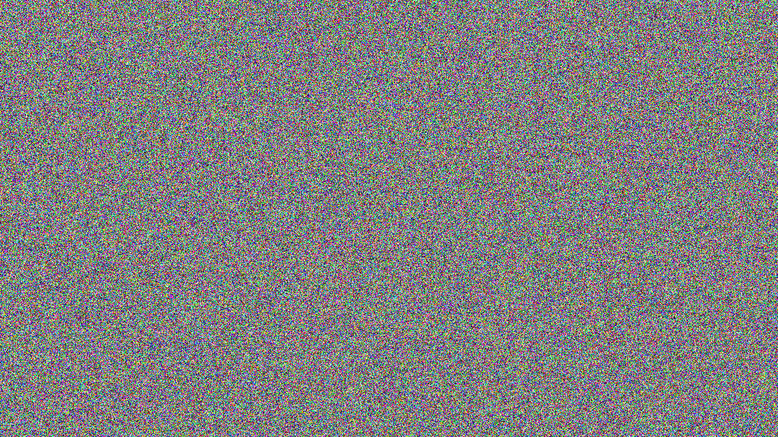
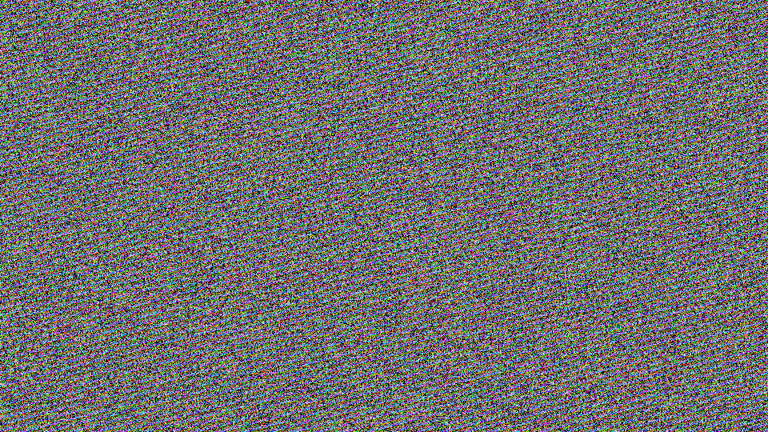
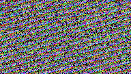
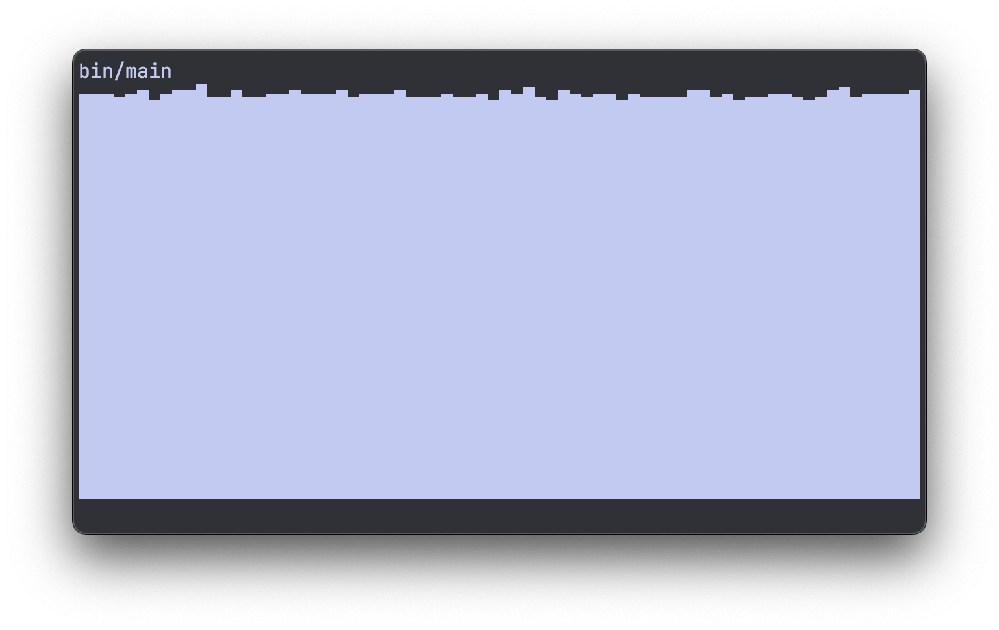
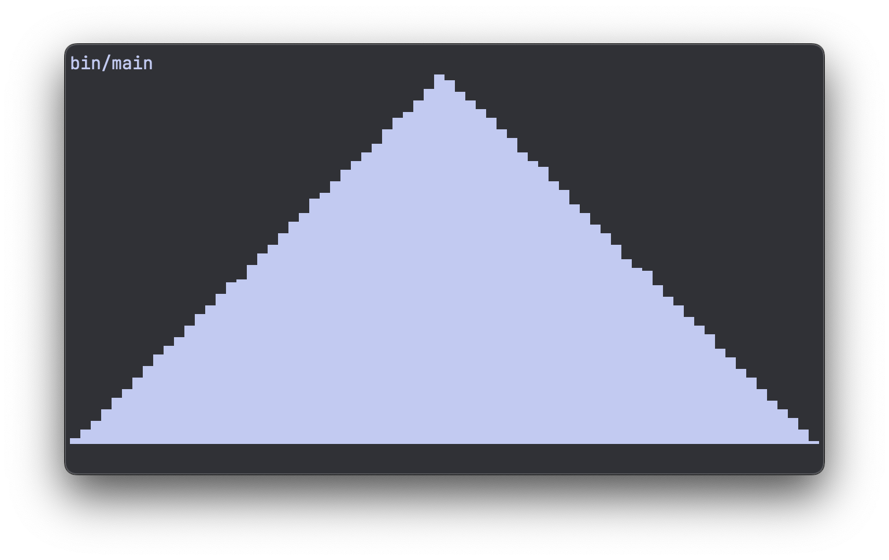
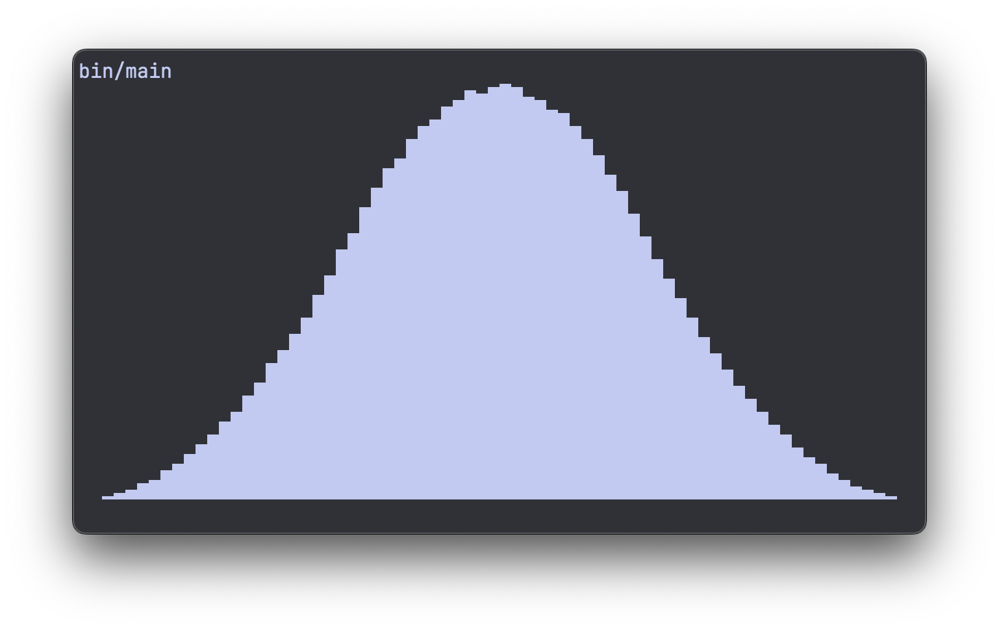
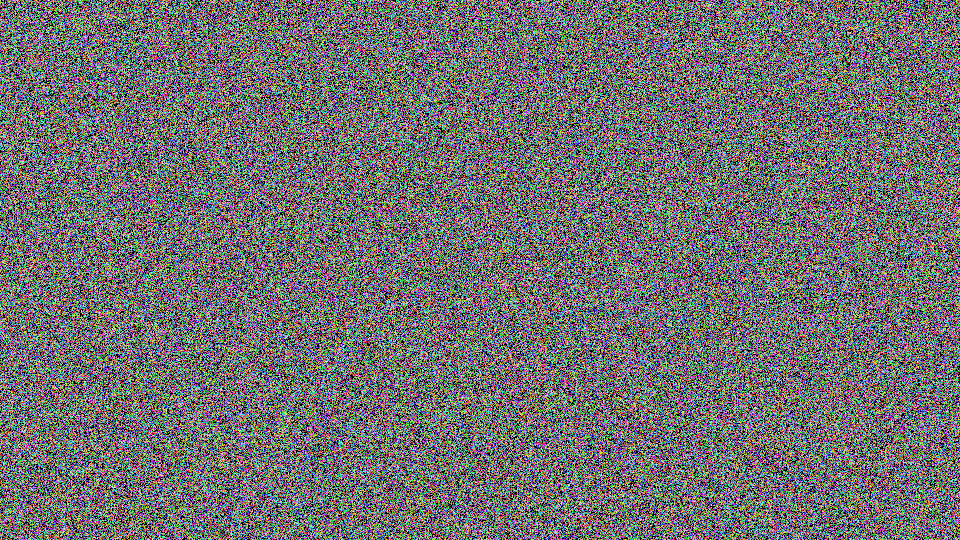
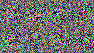

Stop using rand()
In this article I will try to convince you to stop using rand() in your C projects,
and write a better alternative from scratch.
Before I entered the RNG rabbit hole, I was definitely guilty of grabbing rand(), and
maybe some srand(time(NULL)) when I needed it to be "unpredictable".
"But I'm not using it for cryptography"
In the back of my mind I always knew that rand() was not a "safe" random number
generator, but when you just need some randomness for statistics or machine learning,
who cares?
After digging a bit deeper though, I found out stronger reasons for ditching
rand() and using something better.
Why not?
The three main reasons I don't use rand() anymore:
- It's platform dependent
- It's slow
- It's low quality
Platform dependent
This means that rand() behaves differently depending on the platform you compile it
for. What might be different? The maximum random number you can get (RAND_MAX) might
be different, also the sequence of random numbers after a given seed set with srand()
can be different. So that can be pretty annoying.
Slow
The rand function is not doing any complex math, but it relies on a global state and
needs to acquire a lock to be able to mutate it (at least my implementation on MacOS).
This happens every time you call rand(). So when you're calling it in a hot loop, it
can get pretty slow compared to rolling your own RNG.
Low quality
The quality of random numbers that rand() produces is poor, we already knew that it's
not "cryptographically safe" to use. But if we look at some simple alternatives, we can
easily get way higher quality random numbers. (longer periods for example, so less
repetition in sequences)
Putting rand() to the test
Humans are pretty good at recognizing visual patterns. So to test a random number
generator, you can use visualization to expose flaws. Let's do that with rand().
If we create a 960 × 540 pixel buffer, and pick random color values for each pixel using
rand():
#define WIDTH 960
#define HEIGHT 540
#define DEPTH 3 // RGB
#define BUF_LEN (WIDTH * HEIGHT * DEPTH)
int main(void) {
uint8_t pix_buffer[BUF_LEN] = {};
for (size_t i = 0; i < WIDTH * HEIGHT; ++i) {
uint8_t *pixel = &pix_buffer[i * DEPTH];
uint32_t roll = rand();
uint32_t pixel_col = roll / (RAND_MAX + 1.0) * (1 << 24);
memcpy(pixel, &pixel_col, DEPTH);
}
// Writing the pixels to an image here
}
We get an image that looks like this:

Looks pretty random, no weird patterns or repetition.
But if we change the way we color in the pixels, we can push rand() to its limits.
Instead of looping over pixels, we'll take a certain amount of "samples". For every sample, we pick a random number to decide which pixel to color, then we pick another random number that decides the color for that pixel:
#define SAMPLE_COUNT (1 << 20)
#define WIDTH 960
#define HEIGHT 540
#define DEPTH 3 // RGB
int main(void) {
uint8_t pix_buffer[BUF_LEN] = {};
for (size_t i = 0; i < SAMPLE_COUNT; ++i) {
uint32_t roll_a = rand();
uint32_t roll_b = rand();
size_t pixel_ix = roll_a / (RAND_MAX + 1.0) * WIDTH * HEIGHT;
uint8_t *pixel = &pix_buffer[pixel_ix * DEPTH];
uint32_t pixel_col = roll_b / (RAND_MAX + 1.0) * (1 << 24);
memcpy(pixel, &pixel_col, DEPTH);
}
// Writing the pixels to an image here
}
And this is the image you get:

Looks okay at first glance, but if you zoom in you can clearly start to see some repetition:

The reason for this pattern is that we call rand() once for the position, and then
again for the color. And if you call rand() twice, the second call really depends on
the first call. So in this loop, the color depends on the location, that's what causes
the stripe pattern.
So, rand() is clearly suboptimal. How can we improve it?
RNG from first principles
First, I'd like to get a basic understanding of how a pseudo random number generator works.
There are a lot of different approaches for generating random numbers. Most of them share the basic principle of having some kind of state, and being able to scramble this state to make it appear "random".
The random number you get when you call the generator is based on this state, and every time you generate a random number, the state gets mutated. So the next time you generate a random number, you will get a different one.
With this in mind, the most basic example of a pseudo random number generator might be something like this:
It has a state rng_state, and it "scrambles" this state by multiplying it by some
constant 12343. I just picked an arbitrary 5 digit prime number for this. My intuition
is that prime numbers avoid any obvious repetition.
The list of "random" numbers this thing generates looks like this:
Even this basic example looks pretty random at first glance. But of course, you can see
that the first number is exactly our factor 12343 and we multiply by this amount every
time, until we wrap around back to 0 at 4,294,967,296 (2³²).
This also means that we never generate an even number. So there are plenty of flaws to this approach. But this is the basic principle: a state that gets scrambled. We just need to "scramble" it a bit better.
Larger state and better scrambling
What also helps, is to reserve more bytes for the state. It's generally a good idea to have more bytes of state than the bytes of the random number you want to generate. So if you want to generate 32-bit random numbers, having a state of 64 bits would be a good idea.
Getting the optimal scrambling is a wheel I'd rather not re-invent myself. So I've searched for robust existing methods that have proved to behave well, and are backed by research and testing.
The best approach I've found in terms of simplicity, performance, and quality, is the PCG family. On that website, they share a basic C implementation that looks like this:
// *Really* minimal PCG32 code / (c) 2014 M.E. O'Neill / pcg-random.org
// Licensed under Apache License 2.0 (NO WARRANTY, etc. see website)
typedef struct { uint64_t state; uint64_t inc; } pcg32_random_t;
uint32_t pcg32_random_r(pcg32_random_t* rng)
{
uint64_t oldstate = rng->state;
// Advance internal state
rng->state = oldstate * 6364136223846793005ULL + (rng->inc|1);
// Calculate output function (XSH RR), uses old state for max ILP
uint32_t xorshifted = ((oldstate >> 18u) ^ oldstate) >> 27u;
uint32_t rot = oldstate >> 59u;
return (xorshifted >> rot) | (xorshifted << ((-rot) & 31));
}
As you can see, for the state we use a struct called pcg32_random_t that holds two
64-bit integers, one is the actual state, the other decides which "path" or
"trajectory" we take through the state.
Calling the function pcg32_random_r scrambles the state properly, better than simply
multiplying it by a constant number.
In order to use this minimal example, we need to declare our global state. The minimal C example only defines a struct, but it's never instantiated. We can grab the following from their GitHub:
#define PCG32_INITIALIZER {0x853c49e6748fea9bULL, 0xda3e39cb94b95bdbULL}
static pcg32_random_t pcg32_global = PCG32_INITIALIZER;
Now we actually have a global state called pcg32_global.
To generate a random number, we have to call the function pcg32_random_r and pass it
the address of our global state:
Adding some useful wrappers
When I need a random number, I just want to call a simple function, and not worry about passing it anything. So let's add a simple wrapper that allows us to do this:
Now we can simply call rng_u() to get a random uint32_t.
This adds a bit of indirection, which can slow down the code. So later on we'll look at
inlining rng_u() and pcg32_random_r().
In addition to random integers, I'd like to get random floats too. Let's add a
float rng_f(void):
We're dividing by UINT32_MAX + 1.0f to make sure we get a range from 0 to 1 but
excluding 1.0. So the range we get is [0.0, 1.0). This is typically the most
convenient 0 - 1 range to work with for most use cases where you need a random float.
Getting a random float this way is quite naive and can be improved a lot, which we will do in a future article. So stay tuned if that's something you'd like to see.
Sampling from a normal distribution
We can add another flavor of random floats: a random float sampled from a normal distribution. This can be very useful in machine learning and statistics.
If we look at a histogram of 1M random floats, it looks quite uniform:

We can get some interesting distributions by playing around with this. For example, we can add two random numbers together, which gives us this pyramid shaped distribution:

And if we go a step further, adding three random floats together, we're starting to get something that has the shape of a bell curve:

As we add more vanilla random numbers together (random numbers sampled from a uniform distribution), we get closer and closer to a true normal distribution.
What I want when getting a random "norm" float, is I want it to be sampled from a normal distribution that has a mean of 0.0 and standard deviation of 1.0.
In the video I explore this a bit more, but it turns out that if you add 12 random floats together that were sampled from a uniform distribution between 0 and 1, you end up with a standard deviation of exactly 1.0.
The mean will be sitting at 12 * 0.5 = 6, so we have to shift the numbers by -6 to get a mean of 0.0.
This can be wrapped in a function called rng_norm and we get something like this:
float rng_norm(void) {
float result = -6.0f;
for (size_t i = 0; i < 12; ++i) {
result += rng_f();
}
return result;
}
This function builds upon our rng_f function, which isn't as optimal as I'd like yet.
And moreover, it calls it a whopping 12 times, which isn't quite optimal either if you
run it in a hot loop. So even though this kind of works, and gets you a pseudo normally
distributed sample, we will look at optimizing rng_f and rng_norm more in a future
article.
In this article let's keep the focus on our rand() replacement rng_u().
Optimizing rng_u()
Our vanilla random integer generator has a bunch of indirection. One way we can optimize
it is by inlining both rng_u and pcg32_random_r:
static inline uint32_t pcg32_random_r(pcg32_random_t *rng) {
uint64_t oldstate = rng->state;
// LCG step (pcg_setseq_64_step_r)
rng->state = oldstate * 6364136223846793005ULL + (rng->inc | 1);
// XSH RR output (pcg_output_xsh_rr_64_32), fed the old state so the
// step and the output function can overlap
uint32_t xorshifted = ((oldstate >> 18u) ^ oldstate) >> 27u;
uint32_t rot = oldstate >> 59u;
return (xorshifted >> rot) | (xorshifted << ((-rot) & 31));
}
static inline uint32_t rng_u(void) { return pcg32_random_r(&pcg32_global); }
There's a little bit more to this if you want to stash the RNG code away into a lib with
a .c and .h. See the GitHub repo for more
details, as I might keep that more up to date than this article.
Results
What this gives us, is a proper rand() alternative where we have 100% control over the
code, no dependencies.
So what does the random image look like that we get out of this new implementation?
Properly random like this:

And no patterns or repetition to be seen when we zoom in either:

How about the execution time?
I've written a more elaborate benchmark script that compares rand() with rng_u()
(can be found in the repo as well).
This is the result on an M2 Macbook Pro:
Our own implementation is roughly 6.5 times faster. Not bad!